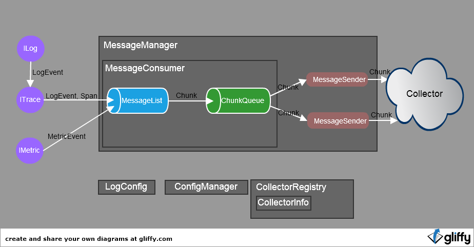

Agent Design and Implementation
Agent总体设计
功能目标
-
提供简便的api,供用户采集结构化数据：log、span(trace)、 metrics
-
将采集到的数据按一定的策略发往Collector

配置信息
LogConfig:
-
该类代表了环境参数的配置
-
使用该agent的appId
-
该agent目的地collector的地址和端口
ConfigManager:
-
该类代表了采集数据的配置
-
log级别，是否开启trace等
-
单例模式
-
自身包含一个timer,会定期从collector刷新配置
CollectorRegistry & CollectorInfo:
-
类CollectorInfo代表一个Collector实例
-
类CollectorRegistry负责初始化并维护Collector实例列表，并提供返回一个CollectorInfo的Api
-
目前实际上只有一个Collector实例，是根据LogConfig初始化的
-
类CollectorRegistry单例模式
-
ConfigManager和MessageSender通过类CollectorRegistry获取Collector实例（即CollectorInfo）
数据流
-
ILog ITrace IMetrics负责采集数据，并通过MessageConsumer的api将数据放入一个名为MessageList的队列
-
MessageConsumer会跑一个线程，根据条件取出MessageList中的数据并打包成一个Chunk,放入一个名为ChunkQueue的队列
-
MessageSender负责从ChunkQueue中取出数据，并发往Collector
结构化数据
Agent数据采集
采集Log
核心类
-
LogManager: 提供静态方法获取一个ILog实例
-
ILog: 接口，提供了记录日志的各种api
-
ILogSender: 接口，定义了一个send()方法，负责发送日志
FreewayLogger
-
接口ILog的实现
-
主要方法writerLog()
-
负责组装一个LogEvent对象
-
将LogEvent作为参数，调用ILogSender的send方法
FreewayLoggerSender
-
接口ILogSender的实现
-
包含一个ITacer的实例
-
send()方法的逻辑
-
接收LogEvent作为参数
-
根据ConfigManager判定该LogEvent是否需要记录
-
如果需要记录，就将该LogEvent传给ITracer的实例
采集Trace
采集Metrics
核心类
-
MetricManager: 提供静态方法获取一个IMetric实例
-
IMetric: 接口，提供了记录Metrics的各种api
IMetricImpl
-
接口IMetric的实现
-
主要方法writerMetric()
-
负责组装一个MetricEvent对象
-
MetricEvent的 自定义Tag只能添加4个 ，超出的会丢弃（总数最多为8个）
-
如果需要添加AppIdTag
-
如果需要添加HostIpTag
-
将MetricEvent传给MessageConsumer
MessageConsumer
MessageSender
配置信息
Agent自身的Metrics